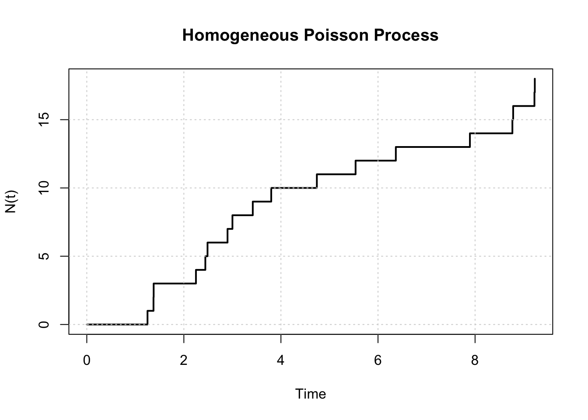
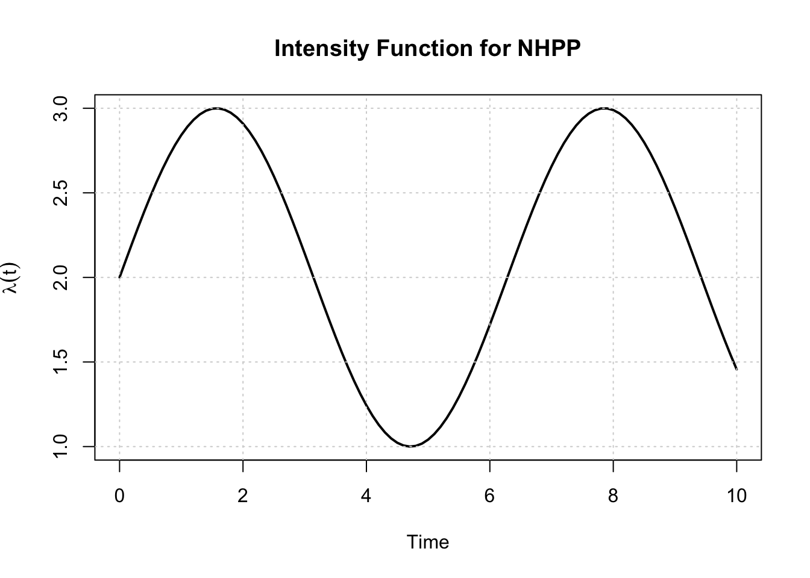
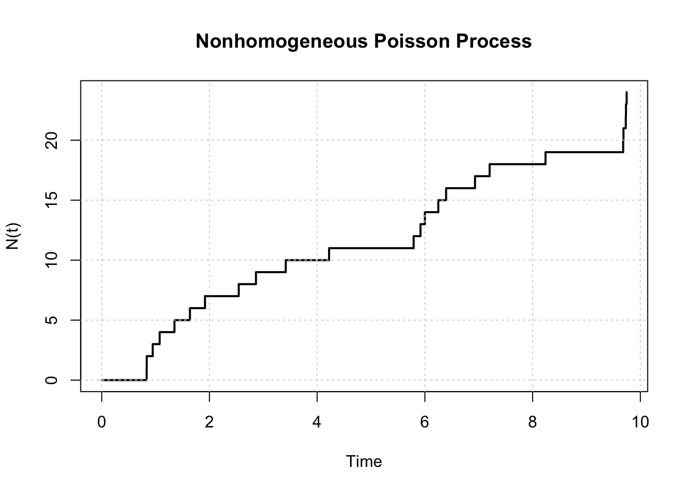
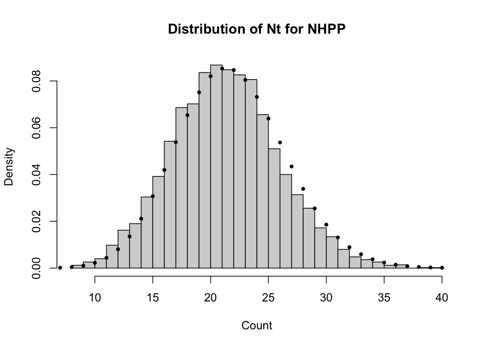
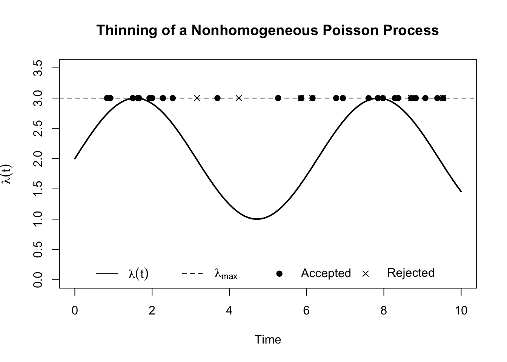
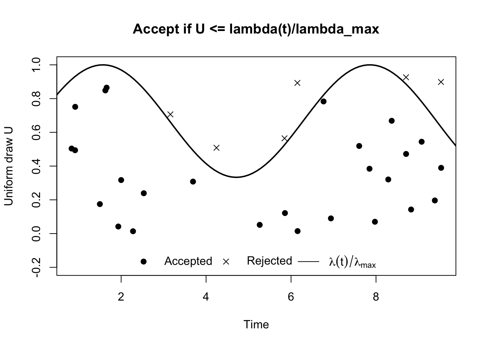

graph LR
A((0)) -->|"$$\lambda$$"| B((1))
B -->|"$$\lambda$$"| C((2))
C -->|"$$\lambda$$"| D(("$$\cdots$$"))
D -->|"$$\lambda$$"| E(("$$k$$"))
E -->|"$$\lambda$$"| F(("$$\cdots$$"))
A --- B --- C --- D --- E --- F
linkStyle 5,6,7,8,9 stroke:#ffffff
style D fill:#FFFFFF00, stroke:#FFFFFF00;
style F fill:#FFFFFF00, stroke:#FFFFFF00;
29 Poisson Process
The Poisson process is a continuous-time, discrete-state stochastic process that models the occurrence of random events over time. It can be defined as
\[ \{N_t, t \geq 0\} \]
where \(N_t\) represents the number of events that have occurred by time \(t\). The Poisson process has the following properties:
\(N_0 = 0\) (starts at zero).
Independent increments: the number of events in disjoint time intervals are independent.
Stationary increments: the distribution of the number of events in any time interval depends only on the length of the interval, not on its location.
Poisson distribution of counts: the number of events in any time interval of length \(t\) follows \(N_t \sim \text{Poisson}(\lambda t)\), where \(\lambda\) is the rate of the process. Therefore, \[ P(N_t = k) = \frac{(\lambda t)^k e^{-\lambda t}}{k!}, \quad k = 0, 1, 2, ... \]
Exponential inter-arrival times: the time between consecutive events (inter-arrival times) are i.i.d. exponential random variables: \[ T \sim \text{Exponential}(\lambda) \quad \text{with} \quad f_T(t) = \lambda e^{-\lambda t}, \quad t > 0. \]
Memoryless property: the waiting time until the next event does not depend on how much time has already elapsed since the last event. \[ P(T > s + t | T > s) = P(T > t) \quad \forall s, t \geq 0. \]
Mean and variance: the mean and variance of \(N_t\) are both equal to \(\lambda t\).
Additivity: If \(N_t\) and \(M_t\) are independent Poisson processes with rates \(\lambda_1\) and \(\lambda_2\), then the combined process \(N_t + M_t\) is also a Poisson process with rate \(\lambda_1 + \lambda_2\).
Thinning: If we have a Poisson process with rate \(\lambda\) and we independently keep each event with probability \(p\), then the resulting process is also a Poisson process with rate \(p\lambda\).
There are two common definitions of a Poisson process: homogeneous and non-homogeneous. Next, we will briefly discuss them.
Homogeneous Poisson Process (HPP)
A homogeneous Poisson process is a Poisson process with a constant rate \(\lambda\) over time. This means that the expected number of events in any time interval of length \(t\) is \(\lambda t\), regardless of when the interval starts. The homogeneous Poisson process is often used to model events that occur randomly and independently over time, such as the arrival of customers at a store or the occurrence of phone calls at a call center.
The diagram below illustrates the homogeneous Poisson process, where events occur at a constant rate \(\lambda\) over time.
Example: Simulating a homogeneous Poisson process with rate \(\lambda = 2\) events per unit time over the interval \([0, 10]\).
set.seed(1234)
simulate_hpp <- function(lambda, T_max) {
times <- c()
t <- 0
while (TRUE) {
t <- t + rexp(1, rate = lambda) # exponential interarrival time
if (t > T_max) break
times <- c(times, t)
}
return(times)
}
# Example
lambda <- 2 # rate = 2 events per unit time
T_max <- 10
event_times_hpp <- simulate_hpp(lambda, T_max)
round(event_times_hpp, 2) # event times [1] 1.25 1.37 1.38 2.25 2.44 2.49 2.90 3.00 3.42 3.80 4.74 5.54 6.37 7.89 8.77
[16] 8.78 9.22 9.23length(event_times_hpp) # number of events in [0, T_max][1] 18plot(c(0, event_times_hpp), 0:length(event_times_hpp),
type = "s", lwd = 2,
xlab = "Time", ylab = "N(t)",
main = "Homogeneous Poisson Process")
grid()
We can also check the count distribution of \(N_t\) for the homogeneous Poisson process by simulating many trajectories and comparing the empirical distribution with the theoretical Poisson distribution. The mean and variance of \(N_t\) should both be close to \(\lambda t\).
# Repeat many times to compare with theory
n_sim <- 5000
counts <- replicate(n_sim, length(simulate_hpp(lambda, T_max)))
mean(counts) # should be close to lambda * T_max[1] 19.9766var(counts) # should also be close to lambda * T_max[1] 19.66559# Empirical distribution of counts
hist(counts, breaks = 30, probability = TRUE,
main = "Distribution of Nt for HPP",
xlab = "Count")
x_vals <- 0:max(counts)
# Theoretical Poisson distribution with mean lambda * T_max
points(x_vals, dpois(x_vals, lambda * T_max), pch = 19, cex = 0.6)The histogram above shows the empirical distribution of the count \(N_t\) from 5000 simulations of the homogeneous Poisson process, along with the theoretical Poisson distribution with mean \(\lambda T_{\max}\). The mean and variance of the simulated counts should be close to \(\lambda T_{\max}\), confirming that our simulation is consistent with the properties of a homogeneous Poisson process.
Python version
import numpy as np
import matplotlib.pyplot as plt
from scipy.stats import poisson
# Set seed for reproducibility
np.random.seed(1234)
def simulate_hpp(lmbda, T_max):
times = []
t = 0.0
while True:
# Exponential interarrival time
t += np.random.exponential(scale=1 / lmbda)
if t > T_max:
break
times.append(t)
return np.array(times)
# Example
lmbda = 2 # rate = 2 events per unit time
T_max = 10
event_times_hpp = simulate_hpp(lmbda, T_max)
# Event times (rounded)
print(np.round(event_times_hpp, 2))
# Number of events in [0, T_max]
print(len(event_times_hpp))
# Plot the counting process N(t)
plt.figure(figsize=(6, 4))
plt.step(
np.concatenate(([0.0], event_times_hpp)),
np.arange(len(event_times_hpp) + 1),
where="post",
linewidth=2
)
plt.xlabel("Time")
plt.ylabel("N(t)")
plt.title("Homogeneous Poisson Process")
plt.grid(True)
plt.tight_layout()
plt.show()
# Repeat many times to compare with theory
n_sim = 5000
counts = np.array([
len(simulate_hpp(lmbda, T_max))
for _ in range(n_sim)
])
# Empirical mean and variance
print(counts.mean()) # should be close to lambda * T_max
print(counts.var()) # should also be close to lambda * T_max
# Empirical distribution of counts
plt.figure(figsize=(6, 4))
plt.hist(
counts,
bins=30,
density=True,
alpha=0.7,
label="Empirical"
)
# Theoretical Poisson distribution with mean lambda * T_max
x_vals = np.arange(0, counts.max() + 1)
plt.plot(
x_vals,
poisson.pmf(x_vals, lmbda * T_max),
"o",
markersize=4,
label="Poisson theory"
)
plt.xlabel("Count")
plt.ylabel("Probability")
plt.title("Distribution of N(t) for HPP")
plt.legend()
plt.tight_layout()
plt.show()Non-Homogeneous Poisson Process (NHPP)
A non-homogeneous Poisson process is a Poisson process where the rate \(\lambda(t)\) varies over time. This means that the expected number of events in a time interval depends on the specific time period being considered. The non-homogeneous Poisson process is often used to model events that occur with varying intensity over time, such as the number of customers arriving at a store during different hours of the day or the occurrence of natural disasters over different seasons. The diagram below illustrates the non-homogeneous Poisson process, where the rate \(\lambda(t)\) changes over time.
graph LR
A((0)) -->|"$$\lambda_0$$"| B((1))
B -->|"$$\lambda_1$$"| C((2))
C -->|"$$\lambda_2$$"| D(("$$\cdots$$"))
D -->|"$$\lambda_{k-1}$$"| E(("$$k$$"))
E -->|"$$\lambda_{k}$$"| F(("$$\cdots$$"))
A --- B --- C --- D --- E --- F
linkStyle 5,6,7,8,9 stroke:#ffffff
style D fill:#FFFFFF00, stroke:#FFFFFF00;
style F fill:#FFFFFF00, stroke:#FFFFFF00;
Example: Simulating a NHPP with a rate function
\[ \lambda(t) = 2 + \sin(t), \quad 0 \leq t \leq 10. \]
The function is always non-negative, and it oscillates between 1 and 3, with an average rate of 2 events per unit time.
A standard simulation method is thinning, where we simulate a HPP with a rate equal to the maximum of \(\lambda(t)\), and then we randomly keep each event with probability \(\lambda(t)/\lambda_{\max}\).
Simulation steps:
- Find an upper bound \(\lambda_{\max}\) such that \(\lambda(t) \leq \lambda_{\max}\) for all \(t\).
- Simulate a HPP with rate \(\lambda_{\max}\) to generate candidate event times.
- Keep a proposed event time \(t\) with probability \[\frac{\lambda(t)}{\lambda_{\max}},\] otherwise discard it.
lambda_fun <- function(t) 2 + sin(t)
T_max <- 10
curve(lambda_fun(x), from = 0, to = T_max, lwd = 2,
xlab = "Time", ylab = expression(lambda(t)),
main = "Intensity Function for NHPP")
grid()
To find \(\lambda_{\max}\), we can use the fact that \(\sin(t)\) oscillates between -1 and 1, so the maximum value of \(\lambda(t)\) is \(2 + 1 = 3\). Therefore, we can set \(\lambda_{\max} = 3\) for our simulation.
Tip
For a more complex rate function, we may need to use numerical methods (differentiation) to find the maximum value.
set.seed(1234)
simulate_nhpp_thinning <- function(lambda_fun, lambda_max, T_max) {
t <- 0
accepted_times <- c()
while (TRUE) {
t <- t + rexp(1, rate = lambda_max) # HPP(lambda_max)
if (t > T_max) break
if (runif(1) <= lambda_fun(t) / lambda_max) {
accepted_times <- c(accepted_times, t)
}
}
return(accepted_times)
}
# Time-varying intensity
lambda_fun <- function(t) 2 + sin(t)
lambda_max <- 3
T_max <- 10
event_times_nhpp <- simulate_nhpp_thinning(lambda_fun, lambda_max, T_max)
event_times_nhpp [1] 0.8339195 0.8361135 0.9468360 1.0758969 1.3505907 1.6380609 1.9174077
[8] 2.5440999 2.8639656 3.4168530 4.2213098 5.7907442 5.9185914 5.9998042
[15] 6.2492317 6.3940795 6.9308415 7.2022433 8.2395838 9.6811048 9.6868032
[22] 9.7298497 9.7332294 9.7460227length(event_times_nhpp)[1] 24plot(c(0, event_times_nhpp), 0:length(event_times_nhpp),
type = "s", lwd = 2,
xlab = "Time", ylab = "N(t)",
main = "Nonhomogeneous Poisson Process")
grid()
The expected count of events in the interval \([0, T]\) for a NHPP is given by the integral of the rate function:
\[ \mathbb{E}[N_T] = \int_0^T \lambda(t) dt. \]
For \(\lambda(t) = 2 + \sin(t)\), we can compute the expected count as follows:
\[ \int_0^{10} (2 + \sin(t)) dt = 20 - \cos(10) + 1 \approx 21.839. \]
expected_count <- integrate(lambda_fun, lower = 0, upper = T_max)$value
expected_count[1] 21.83907You can compare the expected count with the actual count from the simulation to see how well the simulation matches the theoretical expectation.
n_sim <- 5000
counts_nhpp <- replicate(
n_sim,
length(simulate_nhpp_thinning(lambda_fun, lambda_max, T_max))
)
mean(counts_nhpp)[1] 21.78var(counts_nhpp)[1] 21.33627The mean (and variance) of the simulated counts should be close to the expected count computed from the integral of the rate function.
# Empirical distribution of counts
hist(counts_nhpp, breaks = 30, probability = TRUE,
main = "Distribution of Nt for NHPP",
xlab = "Count")
x_vals <- 0:max(counts_nhpp)
# Theoretical Poisson distribution with mean equal to the expected count
points(x_vals, dpois(x_vals, expected_count), pch = 19, cex = 0.6)
The histogram above shows the empirical distribution of the count \(N_t\) from 5000 simulations of the non-homogeneous Poisson process, along with the theoretical Poisson distribution with mean equal to the expected count. Although the rate varies over time, the number of events in a fixed interval \(N_T\) of a NHPP over a fixed interval \([0, T]\) is Poisson distributed with mean (and variance) \(\int_0^T \lambda(t) dt\). What changes relative to the homogeneous case is the lack of stationary increments.
Python version
import numpy as np
import matplotlib.pyplot as plt
# Define intensity function
def lambda_fun(t):
return 2 + np.sin(t)
T_max = 10
# Time grid
t = np.linspace(0, T_max, 1000)
# Plot
plt.figure(figsize=(6, 4))
plt.plot(t, lambda_fun(t), linewidth=2)
plt.xlabel("Time")
plt.ylabel(r"$\lambda(t)$")
plt.title("Intensity Function for NHPP")
plt.grid(True)
plt.tight_layout()
plt.show()
import numpy as np
import matplotlib.pyplot as plt
from scipy.stats import poisson
from scipy.integrate import quad
# Set seed
np.random.seed(1234)
# NHPP simulation by thinning
def simulate_nhpp_thinning(lambda_fun, lambda_max, T_max):
t = 0.0
accepted_times = []
while True:
# Propose event from HPP(lambda_max)
t += np.random.exponential(scale=1 / lambda_max)
if t > T_max:
break
# Accept with probability lambda(t) / lambda_max
if np.random.uniform() <= lambda_fun(t) / lambda_max:
accepted_times.append(t)
return np.array(accepted_times)
# Intensity function
def lambda_fun(t):
return 2 + np.sin(t)
lambda_max = 3
T_max = 10
# Simulate one NHPP path
event_times_nhpp = simulate_nhpp_thinning(lambda_fun, lambda_max, T_max)
print(event_times_nhpp)
print(len(event_times_nhpp))
# Plot the counting process N(t)
plt.figure(figsize=(6, 4))
plt.step(
np.concatenate(([0.0], event_times_nhpp)),
np.arange(len(event_times_nhpp) + 1),
where="post",
linewidth=2
)
plt.xlabel("Time")
plt.ylabel("N(t)")
plt.title("Nonhomogeneous Poisson Process")
plt.grid(True)
plt.tight_layout()
plt.show()
# Expected count: ∫₀ᵀ λ(t) dt
expected_count, _ = quad(lambda_fun, 0, T_max)
print(expected_count)
# Repeated simulation
n_sim = 5000
counts_nhpp = np.array([
len(simulate_nhpp_thinning(lambda_fun, lambda_max, T_max))
for _ in range(n_sim)
])
print(counts_nhpp.mean())
print(counts_nhpp.var())
# Empirical distribution of counts
plt.figure(figsize=(6, 4))
plt.hist(
counts_nhpp,
bins=30,
density=True,
alpha=0.7,
label="Empirical"
)
# Theoretical Poisson distribution with mean = expected count
x_vals = np.arange(0, counts_nhpp.max() + 1)
plt.plot(
x_vals,
poisson.pmf(x_vals, expected_count),
"o",
markersize=4,
label="Poisson theory"
)
plt.xlabel("Count")
plt.ylabel("Probability")
plt.title("Distribution of N(t) for NHPP")
plt.legend()
plt.tight_layout()
plt.show()Thinning algorithm (Intuition)
Thinning uses the accept-reject principle, where we accept a proposed event time \(t\) with probability
\[ \frac{\lambda(t)}{\lambda_{\max}}. \]
From the thinning property of Poisson processes, we know that if we have a Poisson process with rate \(\lambda\) and we independently keep each event with probability \(p\), then the resulting process is also a Poisson process with rate \(p\lambda\).
Therefore, we can
- simulate candidate event times using a faster process (HPP with a constant rate \(\lambda_{\max}\)).
- Since the true rate is \(\lambda(t)\), which may be lower than \(\lambda_{\max}\) at certain times,
- we need to randomly thin the candidate events by keeping each event with probability \(\lambda(t)/\lambda_{\max}\).
- This can be done by generating a uniform random variable \(U \sim \text{Uniform}(0,1)\) for each candidate event time \(t\), and accepting the event if
\[ U \leq \frac{\lambda(t)}{\lambda_{\max}}. \]
This allows us to efficiently simulate a NHPP without having to directly simulate the time-varying intensity function, which can be complex and computationally expensive. By simulating a HPP at the maximum rate and then thinning the events, we can generate a sample path of the NHPP that accurately reflects the varying intensity over time.
Example: Continue from the NHPP example, suppose we have \(\lambda(t) = 2 + \sin(t), 0 \leq t \leq 10\) and \(\lambda_{\max} = 3\). If we generate a candidate event time at \(t=2\), the acceptance probability would be:
\[ \frac{\lambda(2)}{\lambda_\text{max}} = \frac{2 + \sin(2)}{3} \approx 0.9697. \]
Therefore, each candidate event time generated by the HPP will be accepted with probability 0.9697, and rejected with probability 0.0303.
set.seed(1234)
# Time-varying intensity
lambda_fun <- function(t) 2 + sin(t)
# Upper bound
lambda_max <- 3
T_max <- 10
# Step 1: simulate candidate events from HPP(lambda_max)
candidate_times <- c()
t <- 0
while (TRUE) {
t <- t + rexp(1, rate = lambda_max)
if (t > T_max) break
candidate_times <- c(candidate_times, t)
}
candidate_times # from HPP(lambda_max) [1] 0.8339195 0.9161725 0.9183665 1.4992818 1.6283427 1.6583259 1.9330198
[8] 2.0005591 2.2799058 2.5333826 3.1600748 3.6921100 4.2449974 5.2624835
[15] 5.8460435 5.8566187 6.1489389 6.1538101 6.7654981 6.9386119 7.6040381
[22] 7.8468336 7.9746808 8.2881623 8.3693751 8.7067844 8.7081160 8.8261790
[29] 9.0742749 9.3849061 9.5297539 9.5327845length(candidate_times) # number of candidate events[1] 32# Step 2: thin the candidates
u <- runif(length(candidate_times)) # uniform random variables for accept-reject test
u [1] 0.50393349 0.49396092 0.75120020 0.17464982 0.84839241 0.86483383
[7] 0.04185728 0.31718216 0.01374994 0.23902573 0.70649462 0.30809476
[13] 0.50854757 0.05164662 0.56456984 0.12148019 0.89283638 0.01462726
[19] 0.78312110 0.08996133 0.51918998 0.38426669 0.07005250 0.32064442
[25] 0.66849540 0.92640048 0.47190972 0.14261534 0.54426976 0.19617465
[31] 0.89858049 0.38949978accept_prob <- lambda_fun(candidate_times) / lambda_max
accept_prob [1] 0.9135236 0.9310923 0.9315370 0.9991480 0.9994482 0.9987239 0.9783704
[8] 0.9696882 0.9196473 0.8571331 0.6605063 0.4922906 0.3690845 0.3825083
[15] 0.5255494 0.5287508 0.6220521 0.6236618 0.8212765 0.8698325 0.9896421
[22] 0.9999915 0.9975749 0.9690717 0.9566996 0.8859583 0.8856238 0.8544952
[29] 0.7811235 0.6799538 0.6317389 0.6307344accepted <- u <= accept_prob # boolean vector indicating which candidates are accepted
sum(accepted) # number of accepted events[1] 26sum(accepted) / length(candidate_times) # acceptance rate[1] 0.8125accepted_times <- candidate_times[accepted]
rejected_times <- candidate_times[!accepted]
curve(lambda_fun(x), from = 0, to = T_max,
ylim = c(0, lambda_max + 0.5),
lwd = 2,
xlab = "Time", ylab = expression(lambda(t)),
main = "Thinning of a Nonhomogeneous Poisson Process")
abline(h = lambda_max, lty = 2)
# candidate points shown at height lambda_max
points(accepted_times, rep(lambda_max, length(accepted_times)), pch = 19)
points(rejected_times, rep(lambda_max, length(rejected_times)), pch = 4)
legend("bottom",
legend = c(expression(lambda(t)), expression(lambda[max]),
"Accepted", "Rejected"),
ncol = 4,
lty = c(1, 2, NA, NA),
pch = c(NA, NA, 19, 4),
bty = "n")
The above plot shows the intensity function \(\lambda(t)\) (solid line) along with the upper bound \(\lambda_{\max}\) (dashed line). The candidate event times generated from the HPP are shown at height \(\lambda_{\max}\), with accepted events marked as solid points and rejected events marked as crosses. The acceptance test is based on comparing a uniform random variable to the ratio of \(\lambda(t)\) to \(\lambda_{\max}\), which determines whether each candidate event is accepted or rejected.
plot(candidate_times, u,
pch = ifelse(accepted, 19, 4),
xlab = "Time", ylab = "Uniform draw U",
main = "Accept if U <= lambda(t)/lambda_max",
ylim = c(-0.2, 1))
curve(lambda_fun(x) / lambda_max, from = 0, to = T_max,
add = TRUE, lwd = 2)
legend("bottom",
legend = c("Accepted", "Rejected", expression(lambda(t)/lambda[max])),
ncol = 3,
pch = c(19, 4, NA),
lty = c(NA, NA, 1),
bty = "n")
Alternatively, we can plot the uniform random variables \(U\) against time, with accepted events shown as solid points and rejected events shown as crosses. The acceptance threshold \(\lambda(t)/\lambda_{\max}\) is also plotted as a curve. Accepted events occur where the uniform draw is below the acceptance threshold, while rejected events occur where the uniform draw is above the threshold. This visualisation helps to illustrate how the thinning algorithm works in practice.
Python version
candidate_times = []
t = 0.0
while True:
t += np.random.exponential(scale=1 / lambda_max)
if t > T_max:
break
candidate_times.append(t)
candidate_times = np.array(candidate_times)
print(candidate_times)
print(len(candidate_times)) # number of candidate events
u = np.random.uniform(size=len(candidate_times))
accept_prob = lambda_fun(candidate_times) / lambda_max
accepted = u <= accept_prob
print(u)
print(accept_prob)
print(accepted.sum()) # number accepted
print(accepted.sum() / len(candidate_times)) # acceptance rate
accepted_times = candidate_times[accepted]
rejected_times = candidate_times[~accepted]
t_grid = np.linspace(0, T_max, 1000)
# Plot intensity function and candidate points
plt.figure(figsize=(7, 4))
# Intensity function
plt.plot(t_grid, lambda_fun(t_grid), linewidth=2, label=r"$\lambda(t)$")
# Upper bound
plt.axhline(lambda_max, linestyle="--", label=r"$\lambda_{\max}$")
# Candidate points
plt.scatter(accepted_times, [lambda_max]*len(accepted_times),
color="black", marker="o", label="Accepted")
plt.scatter(rejected_times, [lambda_max]*len(rejected_times),
marker="x", label="Rejected")
plt.xlabel("Time")
plt.ylabel(r"$\lambda(t)$")
plt.ylim(0, lambda_max + 0.5)
plt.title("Thinning of a Nonhomogeneous Poisson Process")
plt.legend(loc="lower center", ncol=4, frameon=False)
plt.tight_layout()
plt.show()
# Scatter plot of candidate times vs uniform draws
plt.figure(figsize=(6, 4))
# Accepted points: filled circles
plt.scatter(
candidate_times[accepted],
u[accepted],
marker="o",
label="Accepted"
)
# Rejected points: crosses
plt.scatter(
candidate_times[~accepted],
u[~accepted],
marker="x",
label="Rejected"
)
plt.xlabel("Time")
plt.ylabel("Uniform draw U")
plt.title(r"Accept if $U \leq \lambda(t) / \lambda_{\max}$")
plt.ylim(-0.2, 1.1)
# Overlay acceptance probability curve
t_grid = np.linspace(0, T_max, 1000)
plt.plot(
t_grid,
lambda_fun(t_grid) / lambda_max,
linewidth=2,
label=r"$\lambda(t) / \lambda_{\max}$"
)
# Legend
plt.legend(
loc="lower center",
ncol=3,
frameon=False
)
plt.tight_layout()
plt.show()Comparison: HPP vs NHPP
| Feature | HPP | NHPP |
|---|---|---|
| Rate / Intensity | Constant rate \(\lambda > 0\) | Time‑varying rate \(\lambda(t) \ge 0\) |
| Time | Continuous | Continuous |
| State Space | Discrete: \(\{0,1,2,\dots\}\) | Discrete: \(\{0,1,2,\dots\}\) |
| Independent Increments | ✓ Yes | ✓ Yes |
| Stationary Increments | ✓ Yes | ✗ No |
| Count Distribution | \(N_t \sim \text{Poisson}(\lambda t)\) | \(N_t \sim \text{Poisson}\!\left(\int_0^t \lambda(s)\,ds\right)\) |
| Mean of \(N_t\) | \(\lambda t\) | \(\displaystyle \int_0^t \lambda(s)\,ds\) |
| Variance of \(N_t\) | \(\lambda t\) | \(\displaystyle \int_0^t \lambda(s)\,ds\) |
| Inter‑arrival Times | i.i.d. Exponential(\(\lambda\)) | Not identical; depend on \(\lambda(t)\) |
| Memoryless Property | ✓ Yes (exponential waiting times) | ✗ No (globally) |
| Typical Simulation Method | Exponential inter‑arrival times | Thinning |
| Examples | Phone calls, radioactive decay | Rush‑hour traffic, daily demand patterns |